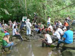
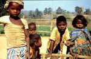
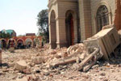
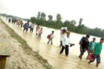
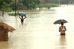

|
Ein Modell für den Frieden
Aachener Friedenspreis für kolumbianische Landgemeinde San José |
Am 1. September wird der diesjährige Aachener Friedenspreis an die Gemeinde von San José de Apartadó in Kolumbien verliehen. "Damit werden Menschen geehrt, die trotz schwerster Verfolgung für Frieden und Gewaltfreiheit eintreten. Die Friedensgemeinden sind in ländlichen Gebieten Kolumbiens oft der einzige Schutz vor Vertreibung und den Übergriffen der Kriegsparteien", begrüßte Ralf Willinger, Referent für Kinder in gewaltsamen Konflikten bei terre des hommes, die Entscheidung.
Die Friedensgemeinde von San José ist die älteste in Kolumbien und ein Modell für mittlerweile 60 Gemeinden. Auf deren Territorium werden weder Waffen noch Bewaffnete egal welcher Kriegspartei geduldet. Die Zivilbevölkerung will gemäß internationalem Recht in den bewaffneten Konflikt nicht einbezogen werden. Einzelne dieser Friedensgemeinden werden von terre des hommes direkt unterstützt.
Seit San José sich 1997 zur Friedensgemeinde erklärt hat, wurden dennoch über 160 Mitglieder der Gemeinde ermordet - häufig unter Duldung, teilweise unter aktiver Beteiligung staatlicher Sicherheitskräfte. "Leider sind die Drohungen und Morde auch nach der Bekanntgabe der Entscheidung aus Aachen weitergegangen", so Willinger. Nach Informationen der Friedensgemeinde San José wurde erst jüngst wieder einer ihrer Sprecher, Dairo Torres, in Komplizenschaft der staatlichen Sicherheitskräfte von den "Aguilas Negras" ermordet. Diese paramilitärische Gruppe, in der sich demobilisierte Mitglieder paramilitärischer Verbände neu organisiert haben, ist auch für Drohungen gegenüber Menschenrechtlern in anderen Landesteilen verantwortlich.
Erst Mitte Juli hatten 34 US-Abgeordnete den kolumbianischen Staat zu stärkeren Bemühungen um die Aufklärung der Verbrechen aufgefordert. "Die Verfolgung der Mörder und der effektive Schutz von Friedensgemeinden wie San José und von Menschenrechtsaktivisten", so Willinger, "sowie die Aufklärung der Rolle staatlicher Sicherheitskräfte vor Ort sollte ein Prüfstein für die Zusammenarbeit mit dem kolumbianischen Staat sein." Dass viele Opfer sich auch mit Drohungen nicht mundtot machen lassen, zeigen die Menschen von San José ebenso wie die terre des hommes-Partnerorganisation und Flüchtlingsinitiative Taller de Vida, die mit ihrem Theaterstück "Das Herz der Zwiebel" am 19. und 20. September auch in Aachen auftreten wird. |
23. August: Tag zur Erinnerung an die Sklaverei und ihre Abschaffung
terre des hommes fordert verbesserte Koordination und Opferschutz in Deutschland |
Aus Anlass des morgigen internationalen Gedenktages an das Verbrechen der Sklaverei fordert das entwicklungspolitische Kinderhilfswerk terre des hommes die deutsche Regierung auf, die Konvention des Europarates gegen Menschenhandel aus dem Jahr 2005 zu ratifizieren. „Das wäre ein wichtiger Schritt zu einem verbesserten Opferschutz sowie zur Bekämpfung des Menschenhandels in Deutschland“, so Claudia Ehlers, Kinderhandelsexpertin von terre des hommes.
Weltweit unterstützt terre des hommes 40 Projekte gegen Kinderhandel. Sie beugen dem Einsatz von Kindern etwa als Prostituierte, Bettel- oder Klaukinder oder als Arbeitssklaven in Steinbrüchen, auf Kakao- oder Baumwollplantagen vor. Auch die direkte Unterstützung von Opfern wird in terre des hommes-Projekten geleistet.
Am 23. August wird an den Sklavenaufstand von 1793 in Santo Domingo erinnert. Er war ein Markstein im Kampf um die Abschaffung der Sklaverei. Knapp zehn Jahre später, vor 200 Jahren, hatte das britische Parlament das Verbot der Sklaverei im gesamten Kolonialreich beschlossen. Trotz solcher historischer Errungenschaften sei das Problem auch heute noch aktuell, erklärte Ehlers mit Verweis auf neue Formen sklavereiähnlicher Abhängigkeitsverhältnisse, auf die Großbritannien jüngst mit der Verabschiedung eines nationalen Aktionsplanes zur Bekämpfung des Menschenhandels reagiert hat.
„Auch in Deutschland wäre es wünschenswert, dass auf eine solche Weise die Arbeit von Polizei, Innenministerium, Jugendämtern und sozialen Einrichtungen stärker koordiniert und die Öffentlichkeit besser aufgeklärt wird“, so Claudia Ehlers. Derzeit falle die Strafverfolgung in die Zuständigkeit der Länder. Dadurch komme es auch im Kampf gegen Menschenhandel zu unterschiedlichen Ansätzen. Eine bessere Abstimmung und stärkere Zusammenarbeit könne die Wirkung der Maßnahmen erhöhen.
|
Peru: Die Angst sitzt tief in der Erdbebenregion
terre des hommes bittet um Spenden für Hilfspakete und psychosoziale Betreuung |
Das entwicklungspolitische Kinderhilfswerk terre des hommes bittet um Spenden für die Opfer des Erdbebens in Peru. "Die Angst sitzt tief", berichtet Marco Bazán, der Länderkoordinator für Peru von terre des hommes. Immer wieder komme es zu Nachbeben, die zusätzlichen Schaden und weitere Opfer verursachen. 80.000 Menschen sind nach Schätzungen bislang betroffen, über 1.000 Personen verletzt, etwa 500 in den Trümmern umgekommen. In der Stadt Ica sind inzwischen verschiedene große Hilfstransporte angekommen, doch insbesondere in den Randgebieten und im Umland gibt es noch viele Menschen, die die Hilfe noch nicht erreicht hat.
terre des hommes hat dem Menschenrechtsbündnis von Ica (Codeh) deshalb kurzfristig 15.000 Euro zur Verfügung gestellt. Zunächst werden Pakete mit elementaren Hilfsgütern verteilt: Kleidung, Handtücher, Wasser, Desinfektionsmittel für Wasser, um Krankheiten vorzubeugen, Lampen, aber auch batteriebetriebene Radios, damit die Menschen sich darüber informieren können, was um sie herum geschieht, wo sie Hilfe bekommen und wie sie aktiv werden können. Ein auf Traumabehandlung spezialisiertes Ärzte-Team soll die sozialen Organisationen vor Ort dabei unterstützen, die Lähmung nach der Katastrophe zu überwinden. Zwar hätten zahlreiche Jugendliche vor Ort spontan die Initiative für Hilfsmaßnahmen ergriffen, doch seien sie bislang nur einzeln aktiv. Gruppen von Freiwilligen aus den Organisationen sollen nun in koordinierter Form dafür sorgen, dass die Hilfe bei denen ankommt, die bislang vergessen wurden, so Marco Bazán. "Für Codeh haben die Kinder, insbesondere auch diejenigen, die ihre Eltern verloren haben, Priorität."
terre des hommes bittet dringend um Spenden für die Opfer des Erdbebens in Peru:
Stichwort: Erdbeben Peru
- Konto 120 790 Sparkasse Gaggenau-Kuppenheim BLZ 665 512 90
- Konto 102 748 00 Voba Baden-Baden/Rastatt BLZ 662 900 00
- Konto 700 800 700 Volksbank Osnabrück eG BLZ 265 900 25
|
Bei Nothilfe für Fluten in Südasien bereits auf Vorsorge setzen
Bündnis "Entwicklung hilft" ruft zu Spenden für Indien und Bangladesh auf |
Um den Millionen von Flutopfern in Indien und Bangladesh akut zu helfen und sie auf künftige Unwetter vorzubereiten, ruft das Bündnis "Entwicklung hilft" zu Spenden auf. Entwicklungsprojekte in gefährdeten Regionen sollten immer auf eine Katastrophenvorsorge hinwirken, die die sozialen und ökologischen Faktoren angeht, die einen Monsunregen erst zur Katastrophe werden lassen, erklärte MISEREOR-Geschäftsführer Martin Bröckelmann-Simon für das Bündnis "Entwicklung hilft" am Dienstag in Aachen. Das Bündnis ist ein Zusammenschluss von "Brot für die Welt", Deutscher Welthungerhilfe, medico international, MISEREOR und terre des hommes. Alle fünf Hilfswerke arbeiten mit ihren Partnern vor Ort daran, Not zu lindern und Katastrophenvorsorge durch nachhaltige Entwicklungsmaßnahmen zu erreichen.
Angesichts der Zunahme von extremen Naturereignissen weltweit müsse man neben der Nothilfe verstärkt auf nachhaltige Entwicklung setzen, die die Armen weniger anfällig für Katastrophen macht, betonte Bröckelmann-Simon und fügte hinzu. "Katastrophenvorsorge und nachhaltige Entwicklung sind zwei Seiten derselben Medaille. Jede Katastrophe macht langjährige Entwicklungsarbeit zunichte; Entwicklungshilfe, die Armut reduziert und die Ressourcen schont, beugt Katastrophen vor und mildert die Folgen." Die Situation in Ländern wie Indien, Bangladesh und Nepal wurde in diesem Jahr noch dadurch verschärft, dass Himalaya-Gletscher wegen steigender Temperaturen schneller abschmelzen und Berghänge aufgrund starker Abholzung kein Wasser zurückhalten.
Wirksame Vorsorge kann nach Schätzungen von Experten das Siebenfache bei der Nothilfe sparen. Ein Beispiel dafür ist das Projekt von terre des hommes im indischen Bundesstaat Bihar, einer der ärmsten Regionen auf dem Subkontinent. In 30 Dörfern richtete die terre des hommes-Partnerorganisation erhöhte Rückzugsorte mit Zugang zu Trinkwasser und Vorräten ein. Die Gemeinden wurden mit Booten zur Evakuierung ausgerüstet und Lehrer, Schüler und Personal aus der Verwaltung wurden als Katastrophenhelfer geschult. Dadurch konnten in den vergangenen Wochen viele Menschenleben gerettet werden.
In Bangladesh unterstützt "Brot für die Welt" eine Partnerorganisation, die die Menschen auf die Folgen des Klimawandels vorbereitet. Zum Beispiel lernen sie, Feldfrüchte anzubauen, die Überschwemmungen vertragen können, oder Regenwasserbecken anzulegen. Sie werden dabei unterstützt, Häuser aus Ziegeln statt aus Lehm zu bauen und sie auf Betonpfeiler zu stellen.
MISEREOR und medico international unterstützen Gesundheitsprojekte in Bihar und Bangladesh, die Deutsche Welthungerhilfe versorgt Flutopfer mit Nahrungsmitteln und Notunterkünften.
Das Bündnis "Entwicklung hilft" bittet die deutsche Bevölkerung um Spenden auf das
Spendenkonto 51 51
Bank für Sozialwirtschaft
BLZ 370 205 00
Stichwort "Flut Südasien"
Online-Spenden
|
"Die Menschen sind verzweifelt und in Panik"
terre des hommes hilft Opfern des Monsunregens in Bihar/ Indien |
Das entwicklungspolitische Kinderhilfswerk terre des hommes bittet dringend um Spenden für die Opfer des Monsunregens in Indien. In den Bundesstaaten Bihar, Uttar Pradesh, Assam und Orissa sind nach indischen Schätzungen fast 15 Millionen Menschen von der Katastrophe betroffen. Besonders verheerend sind die Folgen in der nordöstliche Region Bihar. Projektpartner von terre des hommes beteiligen sich an den Rettungsmaßnahmen und versorgen viele Opfer mit Kleidung, Lebensmittel und Medikamenten. Die Situation, so der terre des hommes-Projektkoordinator in Indien, George Chira, sei dramatisch: "Die Menschen sind verzweifelt und in Panik. Leider fehlen uns im Moment die notwendigen finanziellen Mittel, um die Hilfsmaßnahmen auszuweiten."
Der Bundesstaat Bihar gehört zu den ärmsten Regionen Indiens. Der Monsunregen richtet jedes Jahr große Zerstörungen an. In diesem Jahr waren die Regenfälle aber ungewöhnlich heftig. Mehr als 30.000 Häuser wurden zerstört, Millionen Menschen sind auf der Flucht vor den Wassermassen. Ein Ende der Katastrophe ist nicht in Sicht. Für mehrere Landesteile Bihars sind weitere schwere Regenfälle vorausgesagt worden.
Das Unternehmen Heinrich Deichmann-Schuhe GmbH & Co. KG unterstützt die Soforthilfemaßnahmen von terre des hommes in Bihar mit einer Spende von 20.000 Euro. terre des hommes-Sprecher Michael Heuer rief in diesem Zusammenhang deutsche Unternehmen, die in Indien geschäftlich tätig sind, auf, sich ebenfalls an der Hilfe für die Opfer der Katastrophe zu beteiligen.
terre des hommes bittet dringend um Spenden für die Opfer der Flutkatastrophe im indischen Bihar.
Stichwort: Flut Bihar/ Indien
- Konto 120 790 Sparkasse Gaggenau-Kuppenheim BLZ 665 512 90
- Konto 102 748 00 Voba Baden-Baden/Rastatt BLZ 662 900 00
- Konto 700 800 700 Volksbank Osnabrück eG BLZ 265 900 25
|
|
|
|
 Ansprechpartner Ansprechpartner
|
|
Wolfgang Deppisch
(Projektinfos)
Tel. 07222 / 32927
Heinz Wolf
(Sponsoring, Allgemeines)
Tel. 07225 / 75543
weitere Ansprechpartner
|
|
Erlöse
1992-2012
|
|

Jahr |
Euro |
1992 |
70.000 |
1993 |
75.600 |
1994 |
83.883 |
1995 |
69.617 |
1996 |
51.412 |
1997 |
61.749 |
1998 |
60.333 |
1999 |
68.742 |
2000 |
85.492 |
2001 |
106.375 |
2002 |
78.937 |
2003 |
84.027 |
2004 |
76.662 |
2005 |
149.941 |
2006 |
84.497 |
2007 |
105.958 |
2008 |
104.053 |
2009 |
100.833 |
2010 |
107.254 |
2011 |
103.600 |
| 2012 |
158.250 |
| 2013 |
163.420 |
1977-2013 |
mehr als 2,7 Mio. € |
|
Detailansicht der Erlöszahlen |
|
|


;)